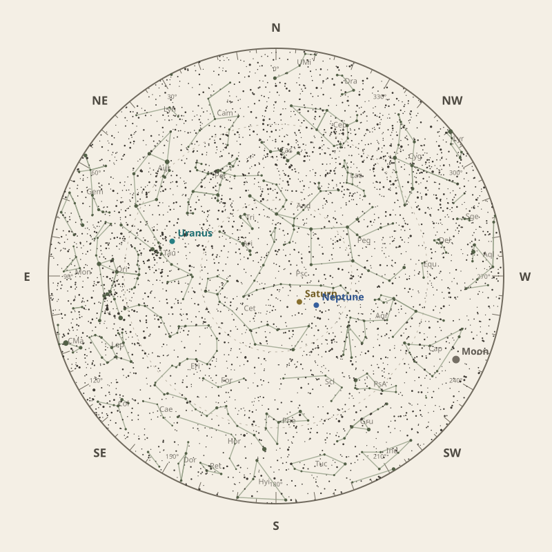

Monthly field almanac
November 2026
Observing reference for Malabar Coast, India.


The month in one sentence · at a glance
Uranus reaches opposition on 26 Nov 2026 and is highest around 12:00 am.
- New Moon
- 9 Nov Darkest skies
- Full Moon
- 25 Nov Brightest skies
- Best dark window
- 14 Nov 11h 38m
Conditions now
Is the sky likely to cooperate?
Checking the sky near Malabar Coast, India…
Find your bearings
The mid-month sky at 10 pm.
Face the matching compass direction and read outward from the centre toward the horizon.

Night planner
Plan the sky for your date.
Choose an observing date to see astronomical darkness, Moon interference, Galactic Centre visibility and the strongest planets.
Best low-Moon dark periods this month
- 6:22 pm–5:59 am11h 38m · 21% Moon
- 6:22 pm–5:59 am11h 37m · 15% Moon
- 6:22 pm–5:59 am11h 37m · 9% Moon
What deserves attention
Top picks for November.
- Milky Way
Milky Way core window
1h 10m with 32° altitude.
- Minor planets
Minor planet 1
71° altitude; magnitude 8.0.
- Planets
Saturn
Best monthly date at 80° altitude.
- Occultations
Jupiter lunar occultation
2:24 am to 3:08 am; Moon at 17° altitude for the first listed contact.
- Planetary events
Mercury greatest western elongation
Morning sky; 19.6° from the Sun.


Moon and darkness
Read the lunar month.
Prefer minimum illumination for faint targets; bright lunar observing belongs near the fullest phase.
Complete lunar data →

Milky Way and deep sky
Recommended core sessions.
- 6:24 pm–7:34 pm1h 10m · core to 32°
- 6:24 pm–7:34 pm1h 10m · core to 31°
- 6:23 pm–7:23 pm1h 00m · core to 31°


Planet visibility
Useful at twilight.
Evening
- Neptune7 Nov · 9:30 pm78° · Excellent
Overnight
- Uranus30 Nov · 12:00 am81° · Excellent
- Saturn6 Nov · 10:00 pm80° · Excellent
Predawn
- Jupiter27 Nov · 6:00 am88° · Excellent
- Mars30 Nov · 6:00 am87° · Excellent
- Venus30 Nov · 6:00 am33° · Good
- Mercury20 Nov · 6:00 am13° · Poor
Other opportunities
Events worth noting.
- Minor planet 171° altitude; magnitude 8.0.
- Jupiter lunar occultation2:24 am to 3:08 am; Moon at 17° altitude for the first listed contact.
- Mercury greatest western elongationMorning sky; 19.6° from the Sun.


Data and downloads
Need every detail?
2 comet calculations are unavailable; they remain in the data library.
Occultation times use a smooth lunar limb; confirm grazing events with IOTA Occult 4.